Actividad 18: La huella digital de un cibercriminal
Reporte Original
Documentación técnica de la extracción de evidencia // Extensión: .pdf
Antecedentes del "Hacking Case"
El caso (CFREDS del NIST) parte de la detención de Greg Schardt, alias "Mr. Evil", sospechoso de fraude de tarjetas (carding) y de interceptar tráfico de redes inalámbricas mediante "wardriving". El 20/09/2004 se incautó una laptop Dell abandonada junto a una antena 802.11b casera. La evidencia se entregó como una imagen forense fragmentada en 8 partes (SCHARDT.001 a .008).
Objetivo Forense
Configurar e importar la imagen en Autopsy, validando su integridad mediante el cálculo del Hash MD5. El objetivo es identificar los detalles del sistema, las cuentas de usuario, fechas críticas del sistema operativo y correlacionar la presencia y ejecución de herramientas de hacking (sniffers, recuperadores de contraseñas) encontradas en el registro y en el Prefetch.
Extracción de Evidencia Fundamental
| Punto de Investigación | Respuesta / Dato Extraído | Fuente en Autopsy |
|---|---|---|
| Hash MD5 y Verificación de Integridad | aee4fcd9301c03b3b054623ca261959a Sí coincide con el original de NIST |
Data Sources Summary (Container) |
| Sistema Operativo | Microsoft Windows XP | Operating System Information |
| Fecha de Instalación (InstallDate) | 19/08/2004, 5:48:27 PM CDT (22:48:27 UTC) | Hive: software\...\CurrentVersion |
| Zona Horaria Configurada | Central Standard Time (UTC-6) / Verano (UTC-5) | Hive: system\...\TimeZoneInformation |
| Propietario Registrado | Greg Schardt | Hive: software\...\CurrentVersion |
| Nombre del Equipo (ComputerName) | N-1A9ODN6ZXK4LQ | Operating System Information |
| Dominio Principal | N-1A9ODN6ZXK4LQ (Sin dominio corporativo) | Hive: software\...\Winlogon |
| Fecha y Hora de Último Apagado | 27/08/2004, 10:46:33 AM CDT (15:46:33 UTC) | Hive: system\...\Windows (Shutdown Time) |
| Cuentas Locales Registradas (SAM) | 5 Cuentas: Administrator, Guest, HelpAssistant, SUPPORT_388945a0, Mr. Evil | Hive: SAM\Domains\Account\Users\Names |
Herramientas Sospechosas y Piratería
El análisis de los registros de instalación (Program Files) y de ejecución (archivos Prefetch) demostró la presencia y el uso de múltiples herramientas asociadas a "wardriving", intercepción de red y robo de credenciales. La mayoría fueron instaladas o ejecutadas poco antes del último apagado.
Herramienta para localizar redes inalámbricas (Wardriving). Ejecutada el 27/08/2004 a las 10:12:35.
Controlador y analizador para capturar e interceptar tráfico de red. Ethereal se ejecutó el 27/08/2004 a las 10:34:54.
Software para captura de credenciales (sniffing) y descifrado de contraseñas. Ejecutado dos veces el 27/08/2004.
Herramientas orientadas a la evasión de rastreo (navegación anónima) y robo de passwords almacenados locales.
Procedimiento Forense de Autopsy (48 Evidencias)
Fase A. Preparación y Creación del Caso
Reunificación de la Evidencia Original (Paso 0)
Se agruparon las ocho partes de la imagen Raw (SCHARDT.001 al .008) descargadas del NIST en una carpeta limpia (EVIDENCE) para asegurar que Autopsy pudiera concatenarlas al momento de cargarlas.
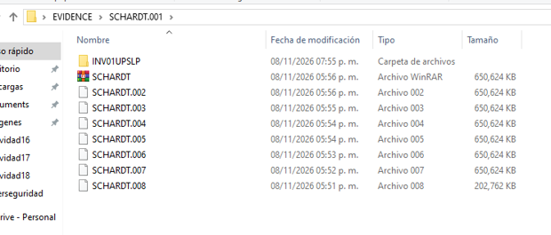
Creación del Caso y Organización (Pasos 1-7)
En Autopsy se inició un New Case. Se estableció el nombre INV01UPSLP, se agregaron los datos opcionales de la investigación y se creó el perfil organizacional ("Universidad Politécnica de San Luis Potosí") para mantener la cadena de custodia.
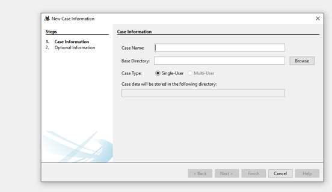
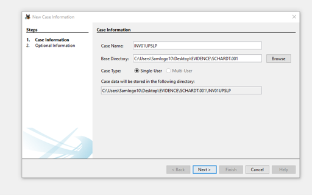
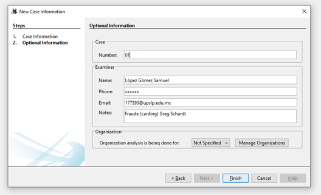
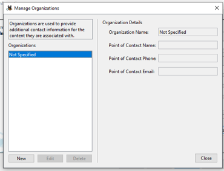
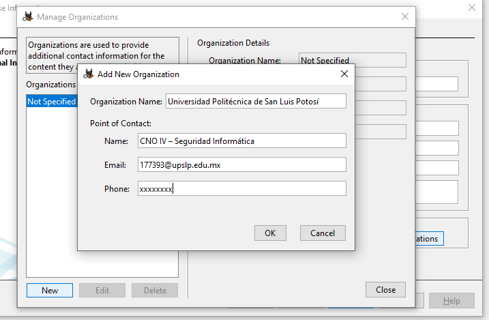
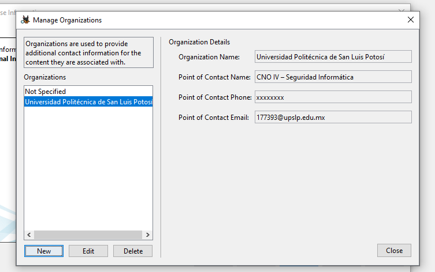
Fase B. Importación e Ingesta Forense
Asignación del Origen de Datos (Pasos 8-10)
Se generó un nuevo host y se agregó la fuente de datos seleccionando Disk Image or VM File. Se apuntó el path al primer archivo (SCHARDT.001) y se especificó la zona horaria America/Chicago (correspondiente a CDT) que es la que usaba el objetivo.
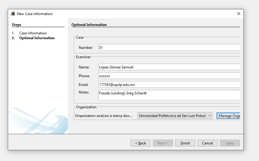
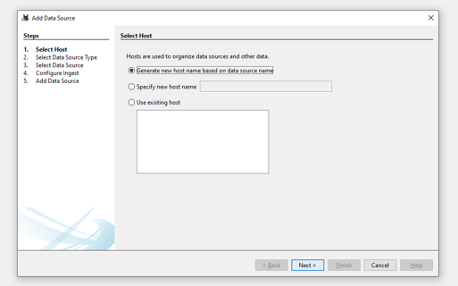
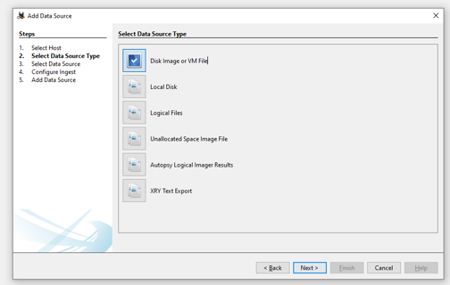
Configuración y Fallo de Ingesta Inicial (Pasos 11-14)
Al configurar los Ingest Modules, se habilitaron todos. Durante el proceso, el sistema arrojó un error debido a que el escáner de malware Cyber Triage carecía de licencia comercial instalada, cancelando el proceso. Se finalizó el asistente conservando la imagen montada.
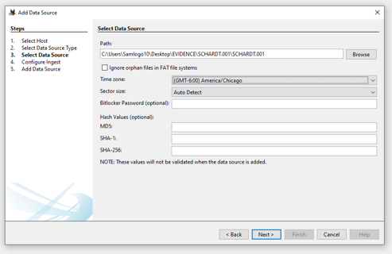
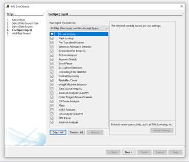
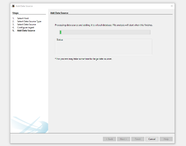
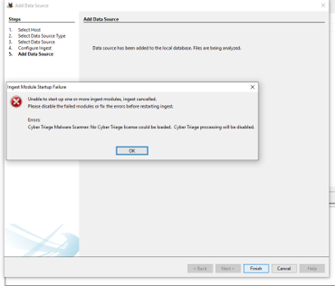
Reanudación y Visualización de Volúmenes (Pasos 15-19)
Se ejecutó Run Ingest Modules nuevamente excluyendo el escáner problemático. Tras esperar a que finalizara el análisis en la barra inferior, la vista mostró que la imagen contenía tres volúmenes, siendo vol2 (NTFS) la partición principal de Windows XP.
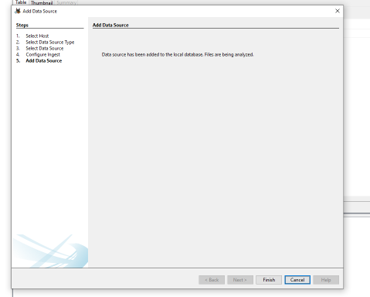
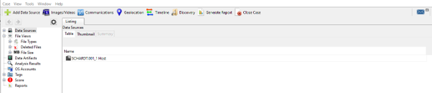
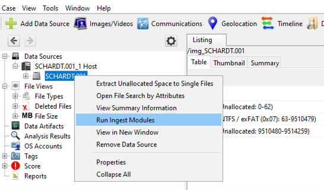
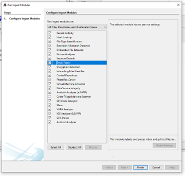
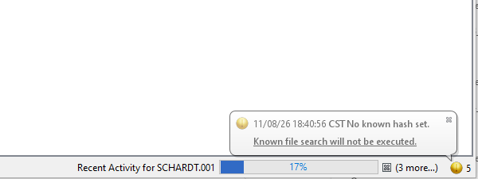
Fase C. Resumen y Verificación de Integridad
Identificación de OS y Hash MD5 (Pasos 20-23)
En Data Sources Summary se comprobó que el OS era Windows XP y se validó el Hash MD5 en la pestaña Container. Posteriormente, el apartado Operating System Information confirmó el nombre del equipo (N-1A9ODN6ZXK4LQ) y el propietario base (Greg Schardt).
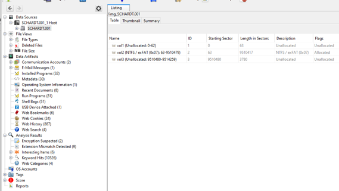
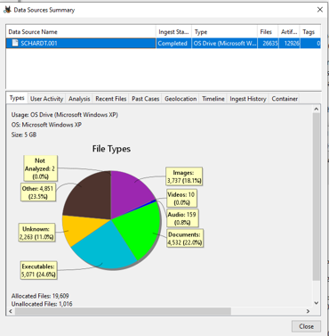
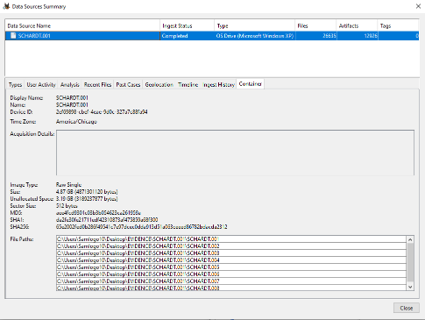
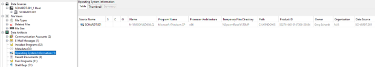
Fase D. Análisis del Registro de Windows (Hives)
Análisis de la Colmena SOFTWARE (Pasos 24-29)
Navegando a WINDOWS\system32\config, se abrió el archivo software en el visor de registros. Se localizó la clave CurrentVersion para determinar la fecha de instalación (InstallDate), y la llave Winlogon que demostró que el equipo no estaba unido a un dominio (DefaultDomainName igual al nombre del host).
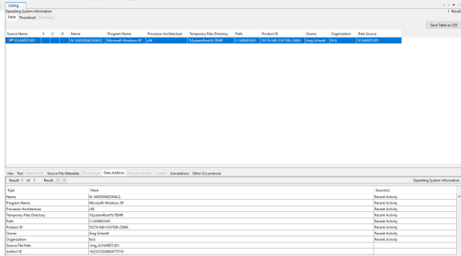
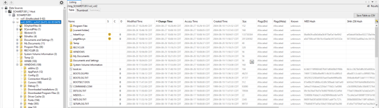
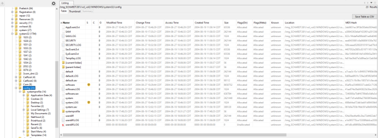
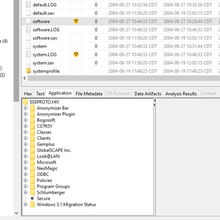
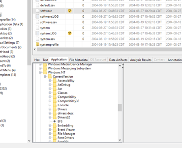
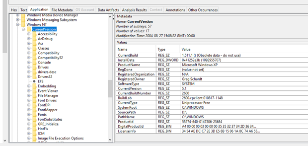
Análisis de Colmenas SYSTEM y SAM (Pasos 30-35)
Abriendo la colmena system se identificó la zona horaria (TimeZoneInformation) y el tiempo del último apagado (Shutdown Time). Luego, cruzando el visor de cuentas (OS Accounts) de Autopsy con la colmena SAM de forma directa, se corroboró la existencia de 5 cuentas, destacando Mr. Evil como la única cuenta personal.
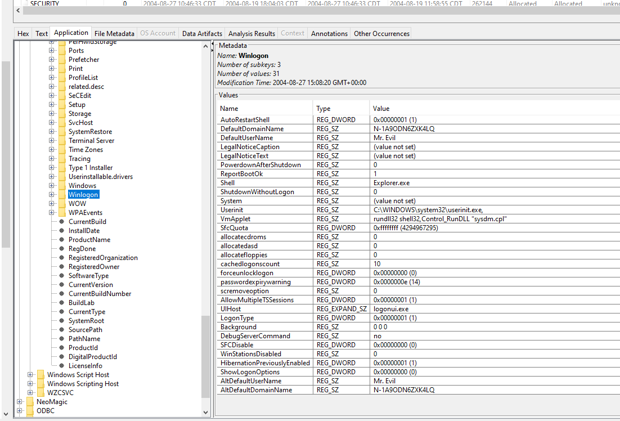
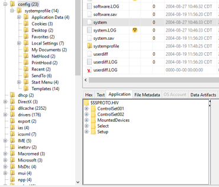
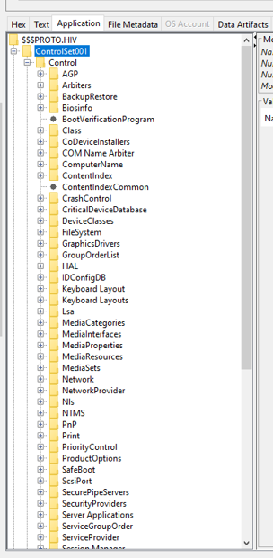
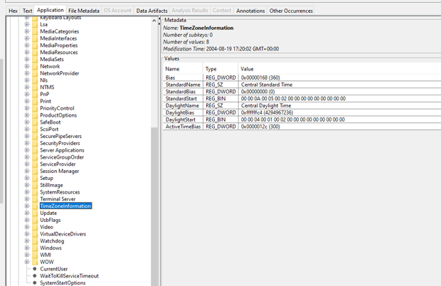
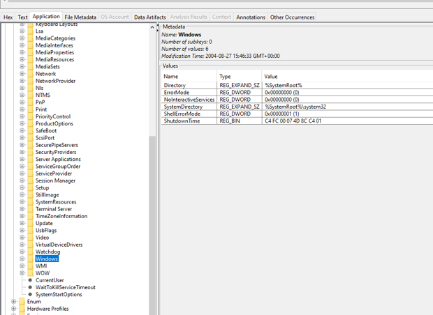
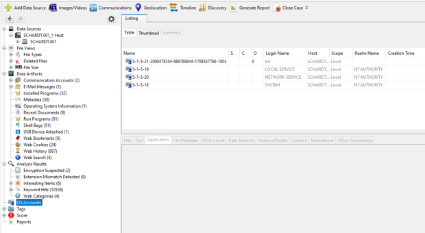
Fase E. Actividad Maliciosa (Software & Artefactos)
Programas Instalados y Ejecutados (Pasos 36-39)
En Installed Programs se identificaron herramientas de intercepción y cracking (Cain, Ethereal, NetStumbler). Para comprobar su uso activo, se analizó exhaustivamente Run Programs (datos extraídos del Prefetch). Se confirmó que dichas herramientas corrieron repetidamente el día 27 de agosto, justo antes del apagado final.
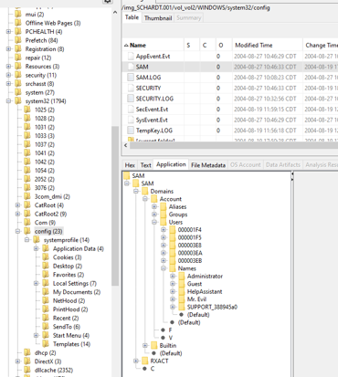
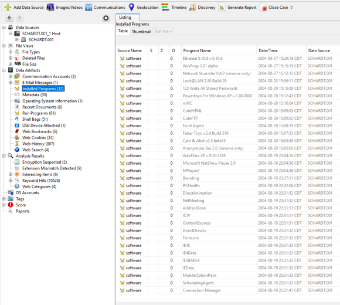
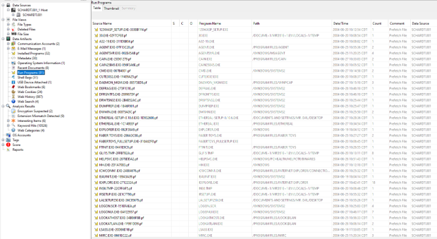
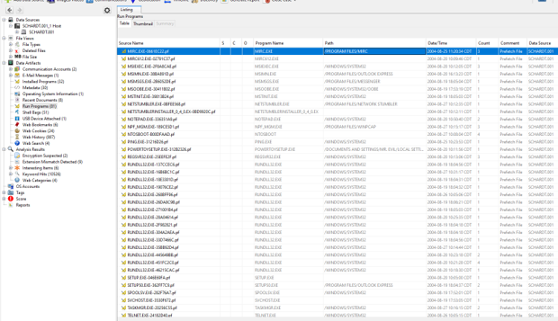
Validación en Sistema de Archivos Físico (Pasos 40-43)
Para confirmar las fechas, se exploró directamente el disco en la ruta Program Files y la carpeta real WINDOWS\Prefetch, confirmando 84 archivos .pf que coinciden temporal y lógicamente con los registros del sistema.
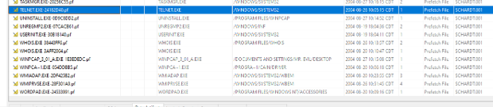
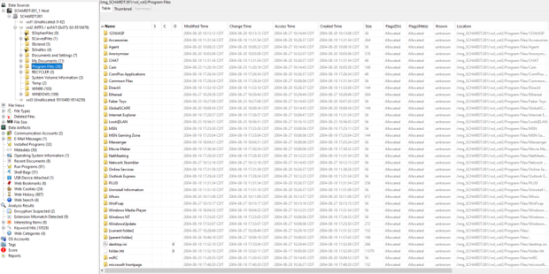
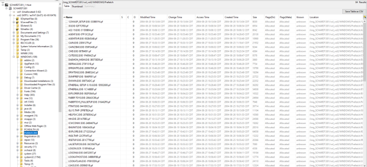
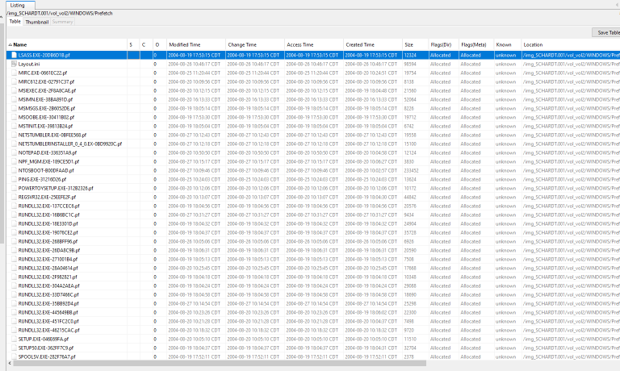
Escritorio, Papelera e Historial Web (Pasos 44-47)
Se auditó la papelera (RECYCLER) detectando alteraciones 16 minutos antes del apagado. En Desktop\Tools se hallaron los instaladores descargados por Mr. Evil, y finalmente, Web History corroboró visitas a sitios de wardriving, páginas de hackeo (2600.com) y descargas directas de los sniffers instalados.
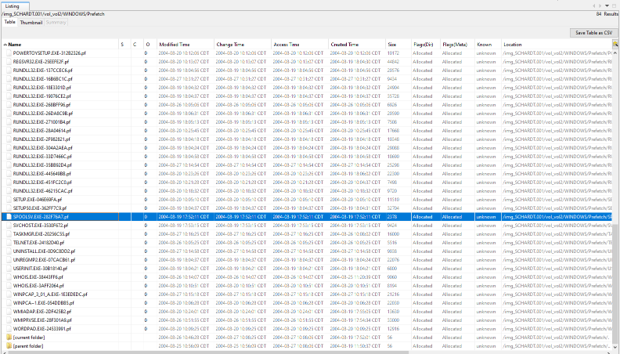
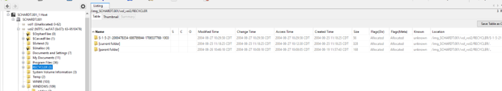
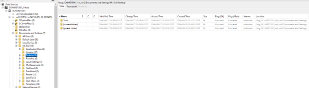
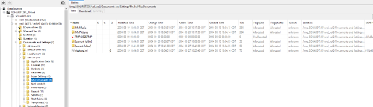
> Línea de Tiempo de Interceptación Crítica (27/08/2004)
- 10:12 AM: Se instala y ejecuta Network Stumbler.
- 10:15 AM: Se instala el driver WinPcap (controlador de captura).
- 10:28 AM: Se instala Ethereal (analizador de red).
- 10:29 AM: Modificación sospechosa de la papelera RECYCLER.
- 10:33 AM: Se ejecuta Caín & Abel (2 veces) para recuperar passwords.
- 10:46:17 AM: Última ejecución de LOGONUI (Cierre de Sesión).
- 10:46:33 AM: Apagado Final (Shutdown Time).